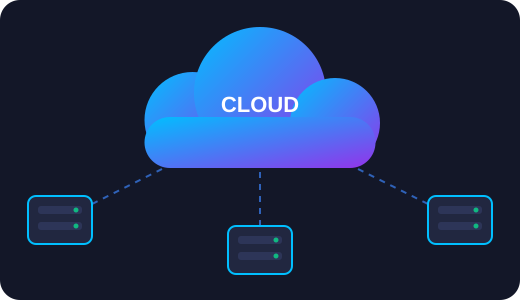
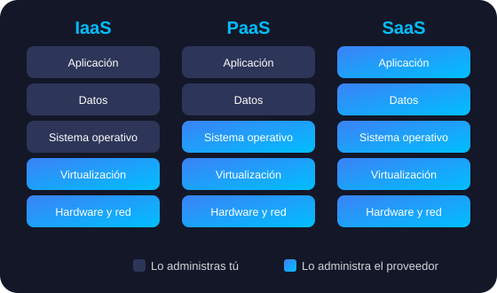

Aprendiendo sobre La Computación en la Nube
Descubre cómo la infraestructura bajo demanda, la virtualización y los servicios distribuidos transforman el desarrollo de software y las operaciones globales.

Comenzar a aprender¿Qué es la Computación en la Nube?
Es la entrega a petición de recursos de TI a través de Internet con un modelo de pago por uso. En lugar de comprar, poseer y mantener servidores o centros de datos físicos, puedes acceder a servicios tecnológicos según los necesites.
Escalabilidad Instantánea
Aumenta o reduce recursos de cómputo y almacenamiento en cuestión de segundos según la demanda.
Reducción de Costes
Elimina gastos de capital iniciales en infraestructura física e instalaciones informáticas.
Acceso Global
Despliega aplicaciones en múltiples regiones del mundo con solo unos clics y baja latencia.
Seguridad y Respaldo
Copia de seguridad automatizada, cifrado de datos de alto nivel y continuidad del negocio.
Modelos de Servicio en la Nube
La nube ofrece tres modelos principales de servicio según el nivel de control que necesites:

IaaS
Infraestructura como Servicio
Proporciona los bloques fundamentales de TI. Otorga acceso a recursos de red, computadoras (virtuales o dedicadas) y espacio de almacenamiento.
- Control: Alto sobre la infraestructura.
- Ejemplos: AWS EC2, Google Compute Engine, Azure VMs.
PaaS
Plataforma como Servicio
Elimina la necesidad de gestionar la infraestructura subyacente (servidores, S.O.) para centrarse únicamente en la implementación y gestión de aplicaciones.
- Control: Medio (enfocado en el código).
- Ejemplos: Heroku, AWS Elastic Beanstalk, Firebase.
SaaS
Software como Servicio
Proporciona un producto completo ejecutado y gestionado por el proveedor del servicio. El usuario no gestiona el mantenimiento del software.
- Control: Bajo (solo configuración).
- Ejemplos: Google Workspace, Microsoft 365, Salesforce.
Modelos de Despliegue

Nube Pública
La infraestructura pertenece a un proveedor externo que la gestiona y la comparte entre múltiples clientes a través de Internet.
Nube Privada
Recursos utilizados exclusivamente por una sola empresa u organización. Puede estar físicamente en el data center local o ser alojada por un tercero.
Nube Híbrida
Combina infraestructura pública y privada, permitiendo compartir datos y aplicaciones entre ellas según las necesidades del negocio.
Multi-Cloud
Uso de servicios de múltiples proveedores de nube pública (por ejemplo, AWS + Azure) para prevenir el bloqueo de proveedores y optimizar costos.
Seguridad en la Nube
Control de accesos
Permite definir quién puede ingresar a los datos, aplicaciones y recursos de la nube, reduciendo el riesgo de accesos no autorizados.
Cifrado de la información
Protege los datos tanto cuando están almacenados como cuando viajan por Internet, evitando que personas no autorizadas puedan leerlos.
Detección de amenazas
Monitorea actividades sospechosas como malware, phishing, accesos inusuales o intentos de ataque para responder rápidamente.
Copias de seguridad y disponibilidad
Garantiza que la información pueda recuperarse ante errores, fallos técnicos o ataques, y que los usuarios autorizados puedan acceder a ella cuando la necesiten.
Beneficios
Ahorro de costos
Permite pagar solo por los recursos que se utilizan, reduciendo la necesidad de comprar servidores y equipos costosos.
Acceso remoto
Los archivos, aplicaciones y servicios pueden utilizarse desde una computadora, teléfono o tableta con conexión a Internet.
Escalabilidad
Permite aumentar o disminuir el almacenamiento y la capacidad según las necesidades del usuario o la empresa.
Trabajo en equipo
Varias personas pueden editar documentos, compartir archivos y comunicarse en tiempo real desde diferentes lugares.
Respaldo de datos
La información puede guardarse automáticamente y recuperarse si un dispositivo se daña, se pierde o sufre un ataque.
Mantenimiento automático
Los proveedores de la nube se encargan de mantener la infraestructura, lo que reduce la carga de trabajo para los usuarios y las empresas.
Aplicaciones de la Computación en la Nube
La computación en la nube se aplica en la vida cotidiana mediante el correo electrónico, el almacenamiento de archivos, las redes sociales y los servicios de streaming. Estas herramientas permiten acceder a información, comunicarse y disfrutar de contenido desde cualquier dispositivo con conexión a Internet.

Correo electrónico
Servicios como Gmail, Outlook o Yahoo permiten enviar, recibir y consultar mensajes desde el teléfono, computadora o tableta.
Almacenamiento en la Nube
Google Drive, OneDrive, Dropbox e iCloud permiten guardar fotos, documentos, videos y respaldos en línea.
Redes sociales
Plataformas como Facebook, Instagram, TikTok y WhatsApp almacenan fotos, videos, mensajes y perfiles en la nube.
Servicios de música y video
Netflix, YouTube, Spotify, Disney+ y Amazon Prime Video utilizan la nube para ofrecer contenido sin necesidad de descargarlo.
Principales Proveedores de Cloud Computing
Los proveedores de servicios en la nube ofrecen soluciones de infraestructura, plataforma y software para empresas y usuarios individuales. Algunos de los más reconocidos son:
Amazon Web Services (AWS)
Ofrece una amplia gama de servicios en la nube, incluyendo almacenamiento, bases de datos, análisis y aprendizaje automático.
Microsoft Azure
Proporciona servicios en la nube para aplicaciones, bases de datos, inteligencia artificial y soluciones híbridas.
Google Cloud Platform (GCP)
Ofrece servicios de computación, almacenamiento, bases de datos y análisis de datos con enfoque en inteligencia artificial.
IBM Cloud
Proporciona soluciones en la nube para empresas, incluyendo infraestructura, plataforma y software como servicio.
Simulador Interactivo con DOM
Calcula el costo estimado de tus horas de cómputo en la nube.